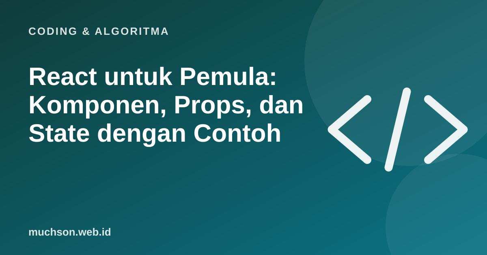

Beranda › Artikel › Coding & Algoritma
Coding & AlgoritmaReact untuk Pemula: Komponen, Props, dan State dengan Contoh
React membangun antarmuka dari potongan kecil yang bisa dipakai ulang. Bila Anda menguasai tiga ide, komponen, props, dan state, sebagian besar kode React akan terbaca masuk akal. Sisanya adalah variasi.

Tiga konsep inti
Contoh paling kecil
function Salam({ nama }) { // props: nama
return <h2>Halo, {nama}!</h2>;
}
function Penghitung() {
const [jumlah, setJumlah] = useState(0); // state
return (
<div>
<p>Diklik {jumlah} kali</p>
<button onClick={() => setJumlah(jumlah + 1)}>Tambah</button>
<Salam nama="Dewi" />
</div>
);
}Setiap kali setJumlah dipanggil, React menggambar ulang komponen dengan nilai baru. Anda tidak mengubah halaman secara manual; Anda mengubah data, dan tampilan mengikuti.
Kesalahan umum pemula
Tanya jawab
Apakah React itu framework atau library?
Secara resmi pustaka untuk membangun UI. Banyak proyek memadukannya dengan alat lain (router, pengelola data) atau memakai kerangka kerja berbasis React.
Perlu belajar JavaScript dulu?
Ya. Dasar JavaScript yang kuat membuat React jauh lebih mudah.
Apa itu hook?
Fungsi khusus seperti useState dan useEffect yang menambahkan kemampuan seperti state dan efek samping ke komponen fungsi.